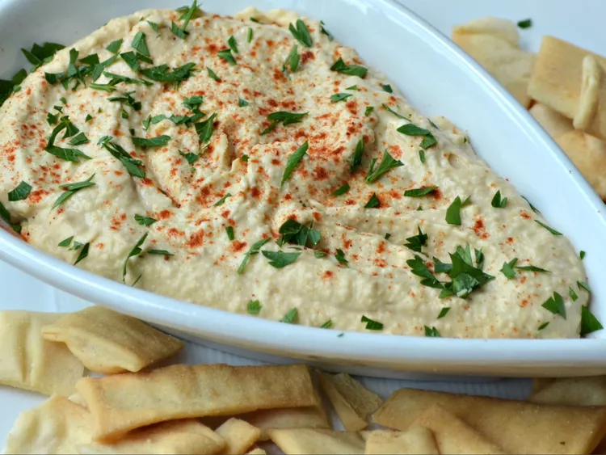

Hummus

Description
I make this hummus at least once a week — it's so simple to make in just 10 minutes, yet it tastes delicious! I got this recipe from my late grandfather who was of Lebanese descent. Serve with warm pita bread.
Ingredients
- 1 (15 ounce) can chickpeas, drained
- 3 tablespoons tahini
- 2 tablespoons olive oil
- 1 tablespoon fresh lemon juice
- ¼ cup water
- 3 cloves garlic, crushed
- ½ teaspoon ground cumin (Optional)
- 1 pinch paprika
- 1 sprig fresh parsley, chopped
Steps
- Place chickpeas, tahini, olive oil, lemon juice, water, garlic, and cumin into a food processor and process until smooth, about 1 minute. Transfer to a bowl and sprinkle top of hummus with paprika and fresh parsley.